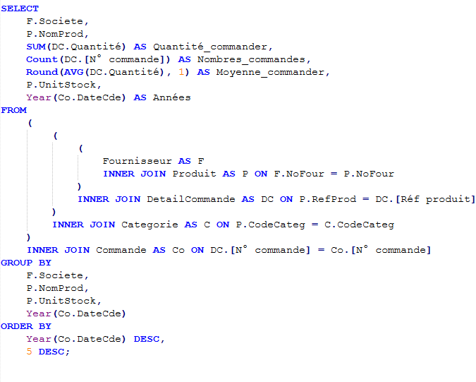
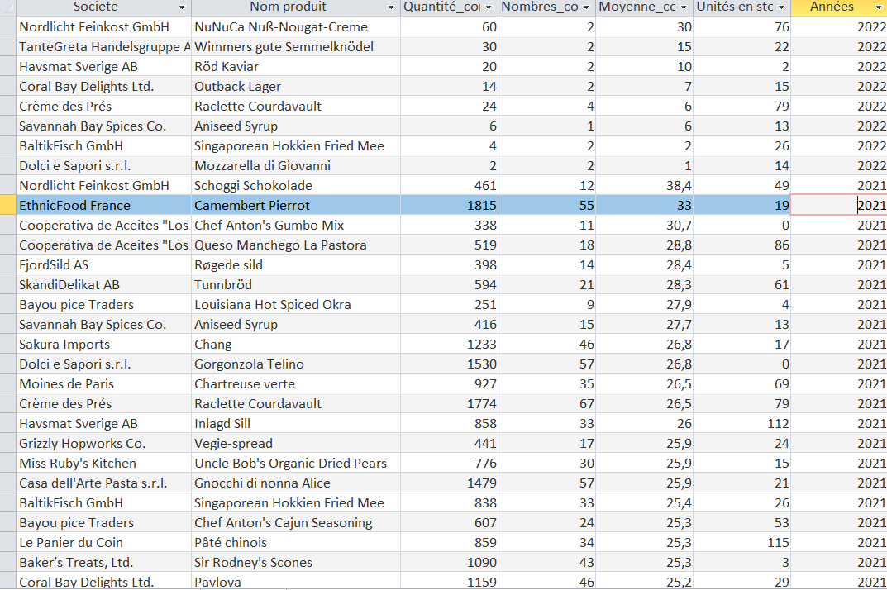

Dans une réflexion en lien avec la demande : regarder les produits commandés annuellements


L'intérêt de cette requête est que KDou est une entreprise qui doit gérer ses stocks le maximun possible. Pour cela, il faut mieux connaitre ses clients et leurs habitudes de commandes, c'est pour cela que de voir annuellement ce qu'il commande est bien pour estimer une certaine quantitée de produits à stocker.
Les produits les plus commandés par année, avec le nombre de commandes et la quantité moyenne par commande, mise à côté du stock actuel. Cela permet de repérer les produits pour lesquels KDou doit prévoir un stock plus important ou pour passer commande.